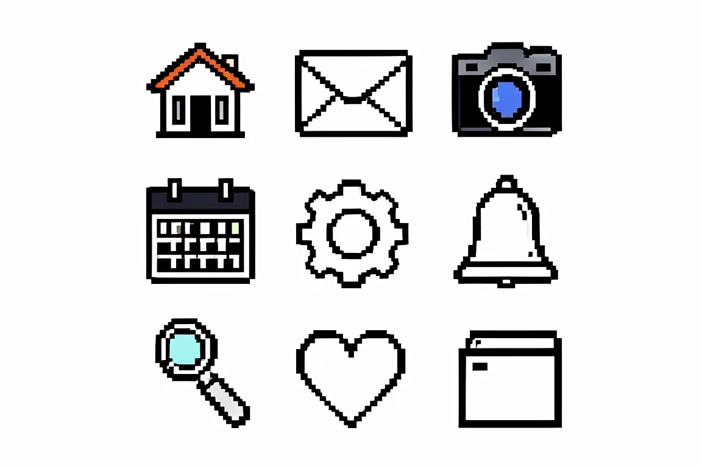

иконки · 1981–present (revival from 2015) · также: Растровая иконка, Иконка в стиле пиксель-арт
Иконки, нарисованные на жёсткой пиксельной сетке, по одному квадрату. Каждый пиксель включён или выключен, края — ступеньки, в наборе от 1 до 16 цветов. Стиль родился из низкого разрешения экранов и сегодня возвращается как ретро-выбор.

Главная идея
Иконка — набор квадратных пикселей на фиксированной сетке, и сетка — часть облика, а не ограничение, которое надо скрывать.
Принципы дизайна
Рисуйте на сетке 16 × 16 или 32 × 32 px и ставьте каждый край на целый пиксель.
Используйте прямые отрезки и шаги 1:1, 1:2 или 2:1 для диагоналей; кривая — последовательность таких шагов.
Держите контур шириной 1 px при 16 px и 2 px при 32 px.
Берите от 1 до 4 цветов для интерфейсного глифа и не больше 16 для иконки приложения, без сглаживания.
Масштабируйте только целыми кратными (2×, 3×, 4×) методом ближайшего соседа.
Оставляйте внутри сетки чистое поле в 1 px с каждой стороны.